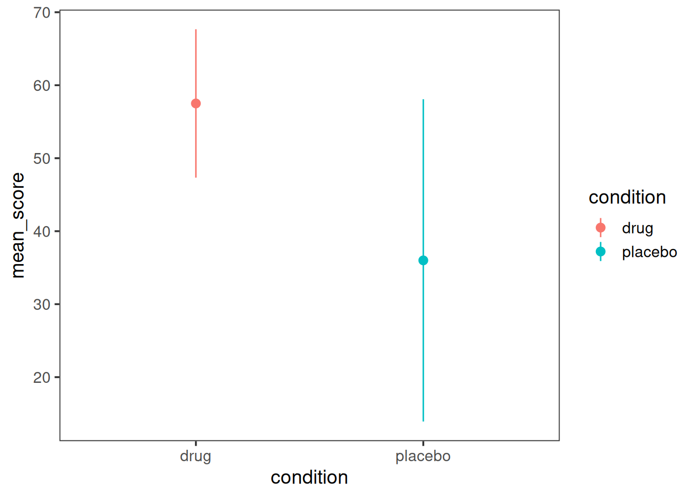

set.seed(2)
raw_data <-
tibble(
participant = as_factor(rep(c("Adam", "Bob", "Charlie"), each=4)),
condition = as_factor(rep(c("drug", "placebo"), each=2, times=3)),
trial = rep(c(1,2), times=6),
score = sample(25:50, 12, replace=F)
) %>%
mutate(score=ifelse(condition=="drug", score+20, score))2 Analysis
2.1 Descriptive statistics
Simple summary statistics can sometimes be obtained with summary() – this will give you min, max, and mean for your dependent variables, which might be enough for your purposes.
summary()
2.2 Aggregation
Once you have a dataset containing results from all participants, you might want to aggregate over trials, participants and conditions before you proceed to analysis.
Aggregation could be a step that you perform in its own right, to obtain descriptive statistics at the condition level. In this case, summary() won’t meet your needs because you need to aggregate over trials in each condition, per participant, to obtain “participant means”, and then go on to aggregate over participant means to the condition level to get “condition means”.
Aggregation could be a step that you need to perform before doing inferential statistics. In this case it’s likely that you want to aggregate over trials in each condition, per participant, to obtain “participant means”, and submit the participant means to analysis.
In either case, aggregation is done by:
group_by()summarise()
2.3 Example with Code
- raw data
# A tibble: 12 × 4
participant condition trial score
<fct> <fct> <dbl> <dbl>
1 Adam drug 1 65
2 Adam drug 2 59
3 Adam placebo 1 30
4 Adam placebo 2 48
5 Bob drug 1 52
6 Bob drug 2 61
7 Bob placebo 1 50
8 Bob placebo 2 36
9 Charlie drug 1 53
10 Charlie drug 2 55
11 Charlie placebo 1 25
12 Charlie placebo 2 27- participant means: a single value per-condition for each participant, collapsing over trials
participant_means = raw_data %>%
group_by(participant, condition) %>%
summarise(mean_score=mean(score))# A tibble: 6 × 3
# Groups: participant [3]
participant condition mean_score
<fct> <fct> <dbl>
1 Adam drug 62
2 Adam placebo 39
3 Bob drug 56.5
4 Bob placebo 43
5 Charlie drug 54
6 Charlie placebo 26 - condition means: a single value for each condition, collapsing over participants
condition_means = participant_means %>%
group_by(condition) %>%
summarise(grand_mean_score=mean(mean_score))# A tibble: 2 × 2
condition grand_mean_score
<fct> <dbl>
1 drug 57.5
2 placebo 36 2.4 Inferential statistics
library(ez)ANOVA_OUTPUT =
ezANOVA(
data = participant_means,
dv = mean_score,
wid = participant,
within = condition,
return_aov = TRUE
)ANOVA_OUTPUT$ANOVA %>% select(-ges) %>% kable(row.names = F, digits=4)| Effect | DFn | DFd | F | p | p<.05 |
|---|---|---|---|---|---|
| condition | 1 | 2 | 25.5622 | 0.037 | * |
ggplot(data=participant_means, aes(y=mean_score, x=condition, color=condition))+
#geom_violin()+
stat_summary(fun.data=mean_cl_normal)+
theme_bw(base_size=14)+
theme(panel.grid=element_blank())